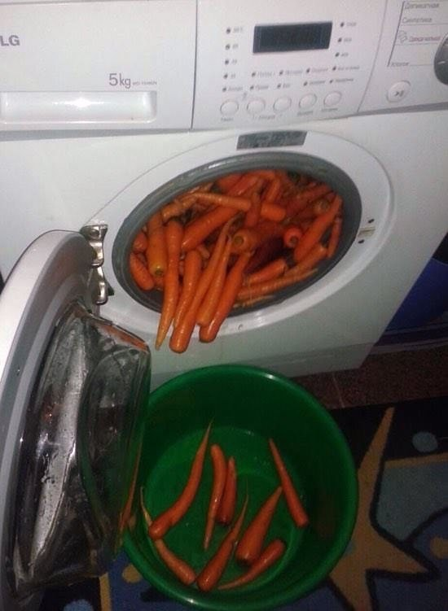

Buttery Cooked Carrots

Description
Boiled carrots are simmered in butter and brown sugar for a delicious side dish that even my carrot-hating family loves! There are never any leftovers.
Ingredients
- 1 pound baby carrots
- ⅓ cup brown sugar
- ¼ cup butter
Steps
- Cook carrots in a large pot of boiling water until tender, about 8 to 10 minutes. Strain carrots, leaving just enough of the cooking water to cover the bottom of the pan; set carrots aside.
- Stir in brown sugar and butter; simmer and stir until butter melts. Return carrots to the pot and toss to coat. Cover and let sit for a few minutes to allow flavors to mingle.